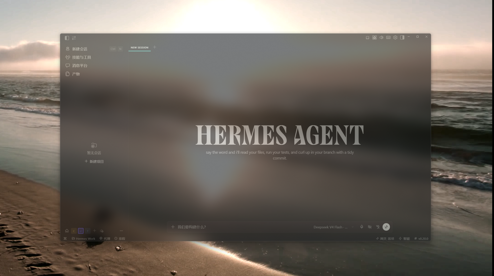

给 Hermes Desktop 垫一块 Windows 原生模糊背景板 —— 不截屏、不占 GPU、不碰窗口内容， 只是一块实时紧贴的「玻璃底」，让桌面从模糊里透出来。
★ GitHub 仓库缺任何一条，效果都会不完整或泛白。
事件驱动（WinEventHook），拖动、缩放、最小化、最大化、全屏全部紧贴，最大滞后 <30ms。
Mica（Win11 系统材质），模糊和抗锯齿都由 DWM 完成，零性能开销。
遮罩不拦截任何鼠标事件，纯粹视觉垫底。
WS_EX_TOOLWINDOW 实例级样式，干净利落。
DWMWA_EXTENDED_FRAME_BOUNDS 真实边界，最大化不会把 8px 阴影边距溢到相邻屏。
Hermes 重启自动重新绑定；遮罩被误杀自动复活；Hermes 退出自动关遮罩。

┌────────────────────────────┐
│ Hermes Desktop（半透明） │ ← 目标窗口
├────────────────────────────┤
│ 遮罩窗 Frost Underlay │ ← Electron 窗口
│ （DWM Mica 材质） │ 点击穿透、无边框、无阴影
└────────────────────────────┘
↓ 事件驱动 SetWindowPos
FrostTracker.exe (WinEventHook)main.js Electron 遮罩窗（Mica、点击穿透、自动拉起跟随器） · FrostTracker.exe C# 跟随器（WinEventHook + 真实边界同步） · watch.ps1 守护脚本（跟随 Hermes 启停，心跳供外部看门狗）
# 1. 安装 electron
npm install electron --save-dev
# 2. 一键启动，跟随 Hermes
powershell -ExecutionPolicy Bypass -File start.ps1
# 或手动
npx electron .| 环境变量 | 说明 | 默认 |
|---|---|---|
| FROST_TARGET | 跟随的进程名 | Hermes |
| FROST_MATERIAL | 材质：mica / acrylic | mica |
| FROST_DARK | 1 = 跟随系统深色模式 | 亮色 |
| ELECTRON_PATH | electron.exe 完整路径 | 自动探测 |
已修复：跟随器优先取 DWMWA_EXTENDED_FRAME_BOUNDS（真实边界），最大化窗口不会带出阴影边距。
Mica 本身是浅色半透材质。请确认：Windhawk 透明 50% + 深色主题 + 界面半透明深色背景，即可压住白雾又不失玻璃感。
FrostTracker 每 30ms 兜底轮询 + 事件驱动，进程重启自动重新绑定主窗口，无需手动干预。